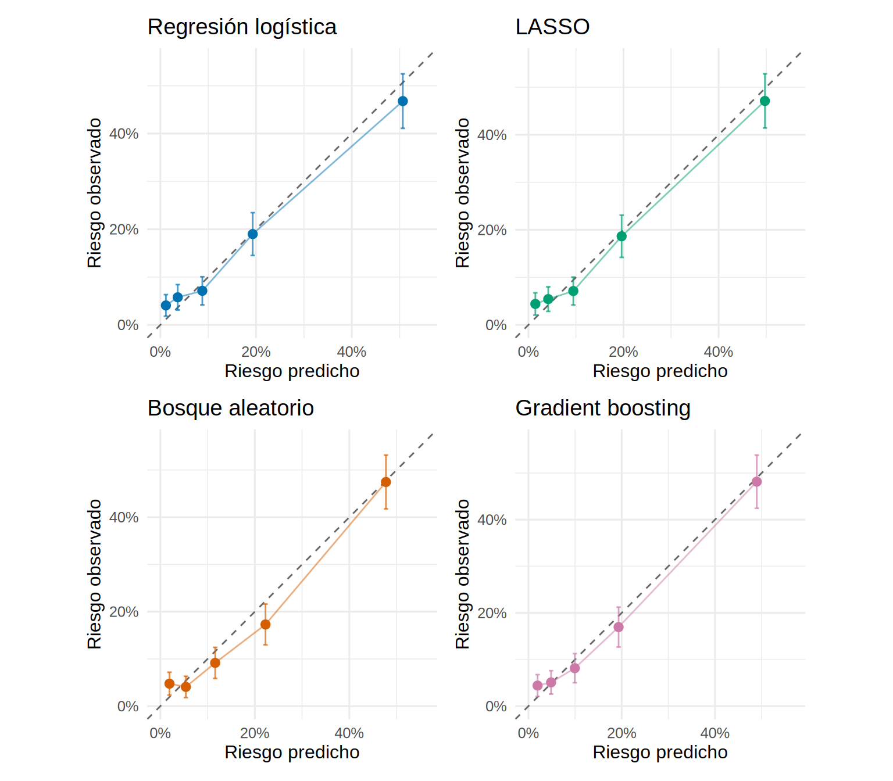
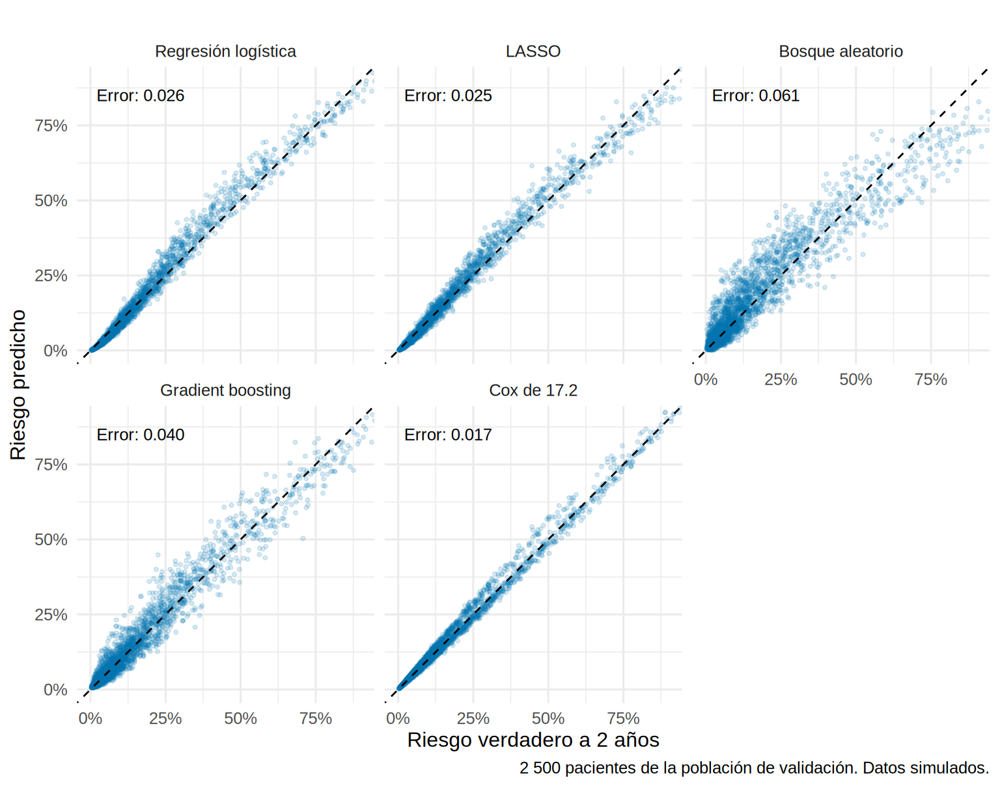
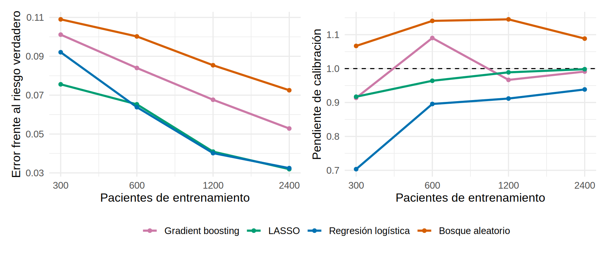
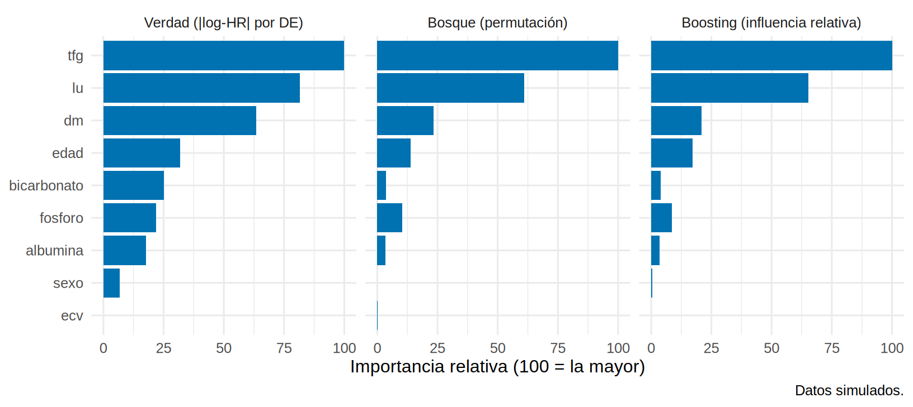
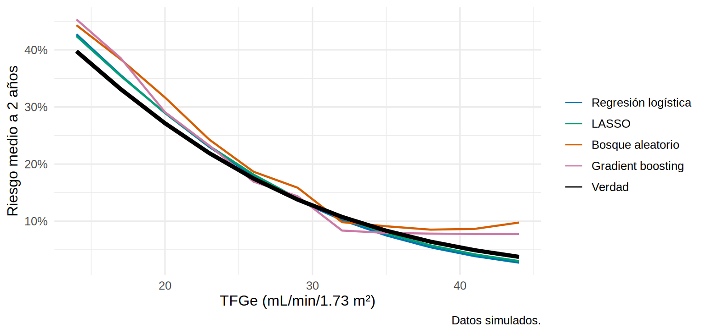

library(tidyverse)
library(survival)
library(glmnet) # LASSO
library(ranger) # bosque aleatorio
library(gbm) # gradient boosting
library(pROC)
library(patchwork)
source("R/funciones_extra_c17.R")
theme_set(theme_minimal(base_size = 12))
f2 <- \(x) sprintf("%.2f", x) # dos decimales para el texto
f3 <- \(x) sprintf("%.3f", x)
dev <- read_csv("Bases/cohorte_pronostico.csv", show_col_types = FALSE) |> preparar_pronostico() # desarrollo (SIMULADA)
val <- read_csv("Bases/cohorte_validacion.csv", show_col_types = FALSE) |> preparar_pronostico() # validación (SIMULADA)
mm <- ajustar_modelos_pronostico(dev) # el modelo de Cox de 17.2: lo usaremos como referencia¿Aporta el aprendizaje automático? LASSO, bosques y boosting frente a la regresión
Nota🩺 Escenario
En un congreso, un grupo presenta una calculadora de falla renal basada en un bosque aleatorio con un AUC de 0.94: “supera a la regresión”. Tu jefe te pregunta si hay que cambiar la calculadora del servicio. Antes de contestar necesitas saber con qué datos se midió ese 0.94 y qué habría pasado con una buena regresión en esos mismos datos. Aprender a comparar de forma honesta es lo que hacemos aquí.
El aprendizaje automático (machine learning) no es otra ciencia: es otra forma de ajustar un modelo de predicción. En vez de que tú especifiques la forma de la relación (una recta por cada predictor), el algoritmo la aprende de los datos. Las reglas de evaluación son las mismas de 17.3 a 17.5: discriminación, calibración y validación en datos que el modelo nunca vio.
Lo que vamos a hacer
- Entrenar cuatro modelos con la cohorte de desarrollo (regresión logística, LASSO, bosque aleatorio y gradient boosting) y compararlos en la cohorte de validación y contra el riesgo verdadero.
- Ver qué pasa cuando hay menos pacientes y construir un mundo donde el aprendizaje automático sí gana.
- Interpretar la “caja negra” y reconocer la fuga de información.
Paso 1: los candidatos y el terreno de juego
Estos son los cuatro modelos. Cada algoritmo tiene hiperparámetros: ajustes que no se estiman con los datos y hay que elegir (por ejemplo, cuánta “multa” aplicar). Se eligen con validación cruzada dentro del entrenamiento, nunca mirando la cohorte de validación.
| Modelo | Idea en una frase | Hiperparámetros que eliges | Paquete |
|---|---|---|---|
| Regresión logística | La referencia: una suma de efectos lineales en la escala logit. | Ninguno | stats::glm |
| LASSO | Regresión con una “multa” que encoge los coeficientes y manda a cero los que no aportan. | \(\lambda\) (cuánta multa) | glmnet |
| Bosque aleatorio | Cientos de árboles de decisión, cada uno con una muestra y variables al azar; se promedian sus respuestas. | Variables por división (mtry), tamaño mínimo de nodo, número de árboles |
ranger |
| Gradient boosting | Árboles pequeños en serie: cada uno corrige los errores del anterior. | Profundidad, tasa de aprendizaje, número de árboles | gbm |
Para que sirvan los algoritmos de clasificación habituales, usamos un desenlace binario: falla renal antes de 24 meses, con la muerte previa contando como “no falla” (igual que en el paso 7 de 17.2). A 2 años casi todos los pacientes tienen el desenlace conocido; los pocos censurados antes quedan fuera. Los 9 predictores son los de 17.2 más la ECV previa.
dev$y <- evento_a_t(dev, 24); val$y <- evento_a_t(val, 24) # 1 = falla renal antes de 24 meses
entrena <- dev |> filter(!is.na(y)); valida <- val |> filter(!is.na(y))
vars <- c("edad", "sexo", "tfg", "lu", "albumina", "fosforo", "bicarbonato", "dm", "ecv")
c(entrenamiento = nrow(entrena), eventos_entrenamiento = sum(entrena$y),
validacion = nrow(valida), eventos_validacion = sum(valida$y)) entrenamiento eventos_entrenamiento validacion
2939 670 1475
eventos_validacion
244 Como los datos son simulados tenemos además la verdad: dos cohortes “oráculo” de 30 000 pacientes sin censura (una con el perfil del desarrollo y otra con el de la validación), y una función, riesgo_verdadero_pronostico(), que calcula el riesgo real de cada paciente con las ecuaciones del simulador. Es un “techo”: ningún modelo puede ordenar mejor que el riesgo verdadero.
y24 <- \(d) as.numeric(d$krt == 1 & d$tiempo_meses <= 24)
oraculo_val <- oraculo_pronostico(30000, "validacion", semilla = 98); oraculo_val$y <- y24(oraculo_val)
oraculo_dev <- oraculo_pronostico(30000, "desarrollo", semilla = 99); oraculo_dev$y <- y24(oraculo_dev)
rv_val <- riesgo_verdadero_pronostico(oraculo_val, 24) # riesgo verdadero de cada paciente a 24 meses
rv_dev <- riesgo_verdadero_pronostico(oraculo_dev, 24)
# ¿Funciona la función? El riesgo verdadero promedio debe coincidir con la proporción observada
techo <- c(riesgo_verdadero_medio = mean(rv_val), proporcion_observada = mean(oraculo_val$y),
AUC_techo = as.numeric(auc(oraculo_val$y, rv_val, quiet = TRUE)), Brier_techo = mean((oraculo_val$y - rv_val)^2))
round(techo, 3)riesgo_verdadero_medio proporcion_observada AUC_techo
0.162 0.161 0.818
Brier_techo
0.103 Qué vemos. El riesgo verdadero promedio (16.2 %) coincide con lo observado en la cohorte (16.1 %). Con estos datos, el mejor AUC que puede lograr cualquier modelo es 0.82, y el mejor Brier, 0.103. Todo lo que mostremos se compara con ese techo.
Paso 2: entrenar cada modelo, con los hiperparámetros elegidos dentro del entrenamiento
Regresión logística. Sin hiperparámetros: un glm() con los 9 predictores.
LASSO. Le damos una lista larga de términos candidatos: los 9 predictores, todos sus productos de a dos (interacciones) y cuadrados de los continuos, 52 columnas en total (matriz_lasso()). Con una regresión sin penalizar, tantos términos serían un desastre (17.1). El LASSO elige \(\lambda\) con validación cruzada de 10 pliegues.
x_ent <- matriz_lasso(entrena) # 52 columnas: efectos principales, interacciones y cuadrados
set.seed(1)
cv_lasso <- cv.glmnet(x_ent, entrena$y, family = "binomial", alpha = 1, nfolds = 10) # alpha = 1 es LASSO
coef_lasso <- coef(cv_lasso, s = "lambda.min") # lambda con menor error de validación cruzada
terminos <- rownames(coef_lasso)[as.numeric(coef_lasso) != 0 & rownames(coef_lasso) != "(Intercept)"]
c(candidatos = ncol(x_ent), retenidos = length(terminos), lambda = signif(cv_lasso$lambda.min, 2))candidatos retenidos lambda
52.0000 12.0000 0.0031 terminos [1] "tfg" "lu" "dm" "I(edad^2)"
[5] "edad:albumina" "edad:bicarbonato" "sexoHombre:lu" "tfg:albumina"
[9] "tfg:fosforo" "lu:fosforo" "albumina:dm" "fosforo:ecv" Qué vemos. De 52 términos candidatos el LASSO conservó 12: tfg, lu (el logaritmo de la UACR) y dm, los efectos reales más grandes, y 9 términos pequeños (productos y un cuadrado) que no existen en la verdad: el LASSO deja pasar algo de ruido, pero con coeficientes minúsculos. Es una selección automática con encogimiento, mucho más estable que una selección por pasos (17.2).
Bosque aleatorio. Elegimos mtry (variables al azar por división) y el tamaño mínimo de nodo con el error “fuera de bolsa” (out-of-bag): cada árbol se entrena con una muestra bootstrap y se evalúa en los pacientes que no entraron en ella. Es una validación interna gratis. Para un bosque de probabilidad, ranger devuelve ese error como Brier.
malla <- expand.grid(mtry = c(2, 3, 5, 7), min.node.size = c(5, 20, 50, 100))
malla$brier_oob <- map2_dbl(malla$mtry, malla$min.node.size, \(m, n) {
ranger(factor(y) ~ ., data = d_ml, probability = TRUE, num.trees = 500, mtry = m, min.node.size = n, seed = 1)$prediction.error
})
mejor <- malla[which.min(malla$brier_oob), ]
m_rf <- ranger(factor(y) ~ ., data = d_ml, probability = TRUE, num.trees = 1000,
mtry = mejor$mtry, min.node.size = mejor$min.node.size, seed = 1, importance = "permutation")
malla |> arrange(brier_oob) |> head(4) |> mutate(brier_oob = round(brier_oob, 4)) mtry min.node.size brier_oob
1 3 50 0.1308
2 5 100 0.1311
3 3 100 0.1312
4 7 100 0.1313Qué vemos. Gana un bosque con mtry = 3 y nodos de al menos 50 pacientes: árboles poco profundos. Con pocos eventos, los árboles profundos memorizan el ruido (el paquete clásico randomForest funciona igual, pero es bastante más lento).
Gradient boosting. Aquí el riesgo de sobreajuste es el número de árboles: demasiados, y el modelo memoriza. gbm lo elige con validación cruzada de 5 pliegues. Probamos tres profundidades de árbol (1 = solo efectos principales; 2 y 3 permiten interacciones).
ajustar_gbm <- \(prof) {
set.seed(1)
gbm(y ~ ., data = d_ml, distribution = "bernoulli", n.trees = 3000, interaction.depth = prof,
shrinkage = 0.01, n.minobsinnode = 20, bag.fraction = 0.5, cv.folds = 5, verbose = FALSE)
}
candidatos_gbm <- map(1:3, ajustar_gbm)
error_cv <- map_dbl(candidatos_gbm, \(g) min(g$cv.error)) # error (devianza) de validación cruzada
m_gbm <- candidatos_gbm[[which.min(error_cv)]]
n_arboles <- gbm.perf(m_gbm, method = "cv", plot.it = FALSE) # árboles con menor error de VC
c(profundidad = m_gbm$interaction.depth, arboles = n_arboles)profundidad arboles
1 1371 Qué vemos. El mejor modelo usa árboles de profundidad 1 y 1371 árboles. Una profundidad baja indica que no hay interacciones fuertes que aprender (en la verdad no las hay).
Ahora predecimos con los cuatro modelos y con el modelo de Cox de 17.2 (que usa los 3 000 pacientes y cuenta la muerte como competidor):
predecir <- \(d) tibble(
logistica = as.numeric(predict(m_log, d, type = "response")),
lasso = as.numeric(predict(cv_lasso, matriz_lasso(d), s = "lambda.min", type = "response")),
rf = predict(m_rf, d)$predictions[, "1"],
gbm = as.numeric(predict(m_gbm, d, n.trees = n_arboles, type = "response")),
cox = cif_cox(mm$krt, mm$muerte, d, 24)) # riesgo a 24 meses del modelo de 17.2
p_ent <- predecir(entrena) # en el entrenamiento (aparente)
p_val <- predecir(valida) # en la cohorte de validación (n = 1 475)
p_or <- predecir(oraculo_val) # en la población de validación completa (la verdad)
etiquetas <- c(logistica = "Regresión logística", lasso = "LASSO", rf = "Bosque aleatorio", gbm = "Gradient boosting", cox = "Cox de 17.2")Paso 3: el espejismo del rendimiento aparente
Primero, la trampa más habitual: medir el modelo con los mismos pacientes con que se entrenó. Comparamos esa cifra con el AUC en la cohorte de validación (con su IC) y con el AUC verdadero de esa población.
auc_ic <- \(y, p) { r <- roc(y, p, quiet = TRUE, direction = "<"); ci <- as.numeric(ci.auc(r)); tibble(auc = ci[2], inf = ci[1], sup = ci[3]) }
auc_tab <- tibble(modelo = names(p_ent),
aparente = map_dbl(p_ent, \(p) as.numeric(auc(entrena$y, p, quiet = TRUE))),
validacion = map_dbl(p_val, \(p) as.numeric(auc(valida$y, p, quiet = TRUE))),
ic_validacion = map_chr(p_val, \(p) { a <- auc_ic(valida$y, p); sprintf("%.3f a %.3f", a$inf, a$sup) }),
verdad = map_dbl(p_or, \(p) as.numeric(auc(oraculo_val$y, p, quiet = TRUE)))) |>
mutate(modelo = etiquetas[modelo])
auc_oob <- as.numeric(auc(entrena$y, m_rf$predictions[, "1"], quiet = TRUE)) # AUC "fuera de bolsa" del bosque
auc_tab |> mutate(across(where(is.numeric), \(x) round(x, 3)))# A tibble: 5 × 5
modelo aparente validacion ic_validacion verdad
<chr> <dbl> <dbl> <chr> <dbl>
1 Regresión logística 0.839 0.811 0.779 a 0.842 0.816
2 LASSO 0.84 0.81 0.778 a 0.841 0.817
3 Bosque aleatorio 0.94 0.805 0.773 a 0.837 0.8
4 Gradient boosting 0.848 0.807 0.775 a 0.839 0.81
5 Cox de 17.2 0.838 0.812 0.780 a 0.843 0.817Qué vemos.
- El bosque parece sensacional en los datos con que se entrenó (AUC aparente 0.94), pero en pacientes nuevos baja a 0.81 (verdad 0.80): un optimismo de 14 centésimos. Un bosque con árboles que ven los datos de entrenamiento los “recuerda”. Ese es el AUC de 0.94 del escenario.
- Los demás modelos pierden mucho menos al pasar del entrenamiento (0.84 en la logística) a la verdad (0.82), en parte por el cambio de perfil de casos: con 74 eventos por parámetro, el sobreajuste es pequeño (17.1).
- El AUC fuera de bolsa del bosque (0.82) sí es una estimación honesta: viene de pacientes que cada árbol no vio.
- En pacientes nuevos los cinco modelos quedan casi empatados y muy cerca del techo de 0.82. Con un IC del orden de ±0.03 en la validación, las diferencias de un centésimo no son detectables.
Paso 4: la calibración, donde sí hay diferencias
Un AUC parecido no significa predicciones parecidas. Miramos la calibración en la cohorte de validación, por quintiles de riesgo (ahora el desenlace es binario y conocido en todos, así que la proporción observada es directa).
colores <- c(logistica = "#0072B2", lasso = "#009E73", rf = "#D55E00", gbm = "#CC79A7")
graficos <- imap(colores, \(col, nm) grafico_calibracion(tabla_calibracion_bin(p_val[[nm]], valida$y, g = 5), etiquetas[[nm]], col))
wrap_plots(graficos, nrow = 2)
eval_val <- map_dfr(p_val, evaluar_prediccion, y = valida$y, .id = "modelo")
eval_verdad <- map_dfr(p_or, evaluar_prediccion, y = oraculo_val$y, riesgo_verdadero = rv_val, .id = "modelo")
oe_rf_desarrollo <- evaluar_prediccion(predecir(oraculo_dev)$rf, oraculo_dev$y)$oe # el mismo bosque, en la población de desarrollo
eval_val |> left_join(eval_verdad, by = "modelo", suffix = c("_val", "_verdad")) |>
transmute(modelo = etiquetas[modelo], pendiente_val, pendiente_verdad, O_E_val = oe_val, O_E_verdad = oe_verdad, brier_verdad) |>
mutate(across(where(is.numeric), \(x) round(x, 3)))# A tibble: 5 × 6
modelo pendiente_val pendiente_verdad O_E_val O_E_verdad brier_verdad
<chr> <dbl> <dbl> <dbl> <dbl> <dbl>
1 Regresión logí… 0.845 0.885 0.99 0.989 0.104
2 LASSO 0.893 0.936 0.98 0.978 0.104
3 Bosque aleator… 0.976 0.989 0.93 0.915 0.107
4 Gradient boost… 0.942 0.964 0.973 0.964 0.105
5 Cox de 17.2 0.954 0.999 0.977 0.975 0.103Qué vemos.
- La regresión logística y el LASSO tienen una pendiente de 0.89 y 0.94 en la verdad: algo menor que 1 (predicciones un poco extremas), y un O/E de 0.99 y 0.98: acertan el riesgo medio.
- El bosque aleatorio tiene un O/E de 0.91: sobreestima el riesgo medio en 9 %. Es la firma de los árboles: aprenden el riesgo de la población en que se entrenaron y se adaptan mal cuando el perfil de casos cambia (la cohorte de validación es mayor y con mejor TFGe, 17.5). En la propia población de desarrollo, el mismo bosque queda bien calibrado (O/E de 0.98).
- El boosting queda en el medio (O/E 0.96).
- El modelo de Cox de 17.2 tiene el mejor Brier (0.103, casi igual al techo 0.103) y una pendiente de 1.00: usa todos los pacientes y modela la muerte explícitamente.
Paso 5: frente al riesgo verdadero de cada paciente
La verdad nos permite una pregunta que en la vida real no se puede contestar: ¿qué tan cerca está cada modelo del riesgo real de cada paciente? Medimos la raíz del error cuadrático medio entre el riesgo predicho y el verdadero (error_riesgo; ideal 0).
set.seed(2); i <- sample(nrow(oraculo_val), 2500)
datos_graf <- bind_cols(verdadero = rv_val, p_or)[i, ] |>
pivot_longer(-verdadero, names_to = "modelo", values_to = "predicho") |>
mutate(modelo = factor(etiquetas[modelo], levels = etiquetas))
errores <- eval_verdad |> transmute(modelo = factor(etiquetas[modelo], levels = etiquetas), etiqueta = paste("Error:", f3(error_riesgo)))
ggplot(datos_graf, aes(verdadero, predicho)) +
geom_point(alpha = 0.15, size = 0.8, color = "#0072B2") +
geom_abline(linetype = "dashed") +
geom_text(data = errores, aes(x = 0.02, y = 0.85, label = etiqueta), hjust = 0, size = 3.4, inherit.aes = FALSE) +
facet_wrap(~ modelo, nrow = 2) +
coord_equal(xlim = c(0, 0.9), ylim = c(0, 0.9)) +
scale_x_continuous(labels = scales::percent) + scale_y_continuous(labels = scales::percent) +
labs(x = "Riesgo verdadero a 2 años", y = "Riesgo predicho", caption = "2 500 pacientes de la población de validación. Datos simulados.")
Qué vemos. La nube del Cox de 17.2 es casi una línea (error 0.017), seguida de la logística y el LASSO (0.026 y 0.025). El boosting (0.040) y sobre todo el bosque (0.061) dibujan nubes ruidosas: dos pacientes casi iguales pueden recibir riesgos muy distintos porque cayeron en hojas distintas de un árbol. Para decidir sobre un paciente concreto, esa dispersión importa más que el AUC.
Paso 6: ¿y si hubiera menos pacientes?
Las diapositivas de Riley del taller del autor recogen un estudio de simulación (van der Ploeg y cols., 2014) en el que las técnicas modernas necesitaron más de 10 veces más eventos por variable que la regresión logística para estabilizar la discriminación. Lo comprobamos: repetimos 6 veces, con submuestras de 300 a 2 400 pacientes, todo el proceso (incluida la elección de hiperparámetros dentro de cada submuestra, con una rejilla reducida) y medimos en el oráculo de la misma población.
tamanos <- c(300, 600, 1200, 2400)
set.seed(17)
curva <- map_dfr(tamanos, \(n) map_dfr(1:6, \(r) {
muestra <- entrena[sample(nrow(entrena), n), ]
a <- ajustar_modelos_ml(muestra, vars, matriz_lasso, semilla = r, rapido = TRUE)
map_dfr(a$predecir(oraculo_dev), evaluar_prediccion, y = oraculo_dev$y, riesgo_verdadero = rv_dev, .id = "modelo") |>
mutate(n = n, repeticion = r)
}))
resumen_curva <- curva |> group_by(n, modelo) |>
summarise(across(c(auc, pendiente, error_riesgo), mean), .groups = "drop")
resumen_curva |> select(n, modelo, auc, error_riesgo) |> pivot_wider(names_from = modelo, values_from = c(auc, error_riesgo)) |>
mutate(across(where(is.numeric), \(x) round(x, 3)))# A tibble: 4 × 9
n auc_gbm auc_lasso auc_logistica auc_rf error_riesgo_gbm
<dbl> <dbl> <dbl> <dbl> <dbl> <dbl>
1 300 0.799 0.811 0.812 0.796 0.101
2 600 0.804 0.814 0.816 0.798 0.084
3 1200 0.812 0.821 0.822 0.807 0.068
4 2400 0.816 0.822 0.823 0.811 0.053
# ℹ 3 more variables: error_riesgo_lasso <dbl>, error_riesgo_logistica <dbl>,
# error_riesgo_rf <dbl>g_err <- ggplot(resumen_curva, aes(n, error_riesgo, color = modelo)) +
geom_line(linewidth = 1) + geom_point() +
scale_x_log10(breaks = tamanos) + scale_color_manual(values = colores, labels = etiquetas) +
labs(x = "Pacientes de entrenamiento", y = "Error frente al riesgo verdadero", color = NULL)
g_pend <- ggplot(resumen_curva, aes(n, pendiente, color = modelo)) +
geom_hline(yintercept = 1, linetype = "dashed") + geom_line(linewidth = 1) + geom_point() +
scale_x_log10(breaks = tamanos) + scale_color_manual(values = colores, labels = etiquetas) +
labs(x = "Pacientes de entrenamiento", y = "Pendiente de calibración", color = NULL)
g_err + g_pend + plot_layout(guides = "collect") & theme(legend.position = "bottom")
Qué vemos.
- Con 300 pacientes (unos 68 eventos) la logística tiene una pendiente de 0.70: sobreajusta (17.1). El LASSO la corrige (0.92) y tiene el menor error: la penalización compra estabilidad con poco costo.
- El bosque y el boosting necesitan mucha más muestra: con 300 pacientes su error frente a la verdad es 0.109 y 0.101, frente a 0.092 de la logística. Con 2 400 siguen sin alcanzar a la regresión (0.073 y 0.053 frente a 0.032).
- La pendiente del bosque supera 1 (predicciones demasiado tímidas): un bosque promedia muchos árboles y comprime el riesgo hacia el centro.
Paso 7: un mundo donde el aprendizaje automático sí gana
En la cohorte de este capítulo la verdad es casi lineal y aditiva, justo el terreno de la regresión. ¿Cuándo cambia el panorama? Simulamos un escenario hipotético de pacientes en hemodiálisis (simular_mundo_no_lineal()) con mortalidad a 1 año cuyo riesgo:
- sube en U con el IMC (delgadez y obesidad extremas pesan más);
- se dispara solo cuando coinciden edad > 75 años y albúmina < 3.5 g/dL (una interacción);
- crece de forma lineal con la PCR; y la hemoglobina y el sexo no influyen.
Una regresión lineal con los seis predictores no puede aprender ni la U ni la interacción. Añadimos una sexta contendiente: la regresión con la forma correcta (curva cuadrática del IMC y la interacción), que solo podemos escribir porque conocemos la verdad.
vars_hd <- c("imc", "edad", "albumina", "pcr", "hb", "sexo")
matriz_hd <- \(d) model.matrix(~ (imc + edad + albumina + pcr + hb + sexo)^2 + I(imc^2) + I(edad^2) + I(albumina^2) +
I(pcr^2) + I(hb^2) - 1, data = d) # efectos, productos de a dos y cuadrados
hd_prueba <- simular_mundo_no_lineal(20000, semilla = 999) |> rename(y = muerte_1a)
techo_hd <- as.numeric(auc(hd_prueba$y, hd_prueba$riesgo_verdadero, quiet = TRUE))
res_hd <- map_dfr(c(500, 2000, 8000), \(n) {
hd <- simular_mundo_no_lineal(n, semilla = n) |> rename(y = muerte_1a)
a <- ajustar_modelos_ml(hd, vars_hd, matriz_hd, rapido = TRUE)
forma <- glm(y ~ I((imc - 27)^2) + I(edad > 75 & albumina < 3.5) + pcr + hb + sexo, family = binomial, data = hd)
p <- a$predecir(hd_prueba) |> mutate(forma_correcta = as.numeric(predict(forma, hd_prueba, type = "response")))
map_dfr(p, evaluar_prediccion, y = hd_prueba$y, riesgo_verdadero = hd_prueba$riesgo_verdadero, .id = "modelo") |> mutate(n = n)
})
etiq_hd <- c(logistica = "Logística lineal", lasso = "LASSO (cuadrados y productos)", rf = "Bosque aleatorio", gbm = "Gradient boosting", forma_correcta = "Regresión con la forma correcta")
res_hd |> mutate(modelo = factor(etiq_hd[modelo], levels = etiq_hd)) |> select(n, modelo, auc, error_riesgo) |>
pivot_wider(names_from = n, values_from = c(auc, error_riesgo)) |> arrange(modelo) |>
mutate(across(where(is.numeric), \(x) round(x, 3)))# A tibble: 5 × 7
modelo auc_500 auc_2000 auc_8000 error_riesgo_500 error_riesgo_2000
<fct> <dbl> <dbl> <dbl> <dbl> <dbl>
1 Logística lineal 0.585 0.601 0.606 0.218 0.216
2 LASSO (cuadrados… 0.769 0.775 0.781 0.084 0.075
3 Bosque aleatorio 0.761 0.774 0.781 0.105 0.079
4 Gradient boosting 0.766 0.781 0.788 0.111 0.071
5 Regresión con la… 0.787 0.792 0.793 0.051 0.022
# ℹ 1 more variable: error_riesgo_8000 <dbl>Qué vemos.
- El techo del AUC es 0.79. La logística lineal se queda en 0.61 aunque tenga 8 000 pacientes: más datos no arreglan un modelo de la forma equivocada.
- El LASSO (con cuadrados y productos), el bosque y el boosting llegan a 0.78, 0.78 y 0.79 con 8 000 pacientes: aprendieron la forma sin que se la dijéramos. Aquí sí hay un beneficio claro.
- Con muestras pequeñas (500 pacientes) los tres ya rondan 0.77, pero su error frente al riesgo verdadero (0.111 el boosting) es mucho mayor que el de la regresión con la forma correcta (0.051).
- La regresión con la forma correcta es la mejor en todos los tamaños: cuando se conoce la estructura, la regresión es más eficiente. El valor del aprendizaje automático está en descubrir la estructura que no conoces; para eso hacen falta datos (el boosting mejora claramente de 500 a 8 000).
Paso 8: abrir la caja negra
Los algoritmos de aprendizaje automático no dan coeficientes, pero sí herramientas para ver qué usan. Dos son habituales:
- La importancia de variables: cuánto empeora el modelo si se desordena (permuta) una variable (bosque) o cuánto contribuye a reducir el error (boosting).
- La dependencia parcial: el riesgo medio predicho al forzar una variable a cada valor, dejando el resto como está.
Comparamos la importancia con el efecto verdadero de cada variable (el log-HR de falla renal por desviación estándar, que conocemos del simulador).
imp_gbm <- summary(m_gbm, n.trees = n_arboles, plotit = FALSE)
efecto_verdadero <- c(tfg = 0.095 * sd(dev$tfg), lu = 0.45 * sd(dev$lu), dm = 0.95 * sd(dev$dm), edad = 0.020 * sd(dev$edad),
bicarbonato = 0.06 * sd(dev$bicarbonato), fosforo = 0.25 * sd(dev$fosforo), albumina = 0.30 * sd(dev$albumina),
sexo = 0.10 * 0.5, ecv = 0)
importancia <- bind_rows(
tibble(variable = names(efecto_verdadero), valor = abs(efecto_verdadero), fuente = "Verdad (|log-HR| por DE)"),
tibble(variable = names(m_rf$variable.importance), valor = pmax(m_rf$variable.importance, 0), fuente = "Bosque (permutación)"),
tibble(variable = imp_gbm$var, valor = imp_gbm$rel.inf, fuente = "Boosting (influencia relativa)")) |>
group_by(fuente) |> mutate(relativa = 100 * valor / max(valor)) |> ungroup() |>
mutate(fuente = factor(fuente, levels = c("Verdad (|log-HR| por DE)", "Bosque (permutación)", "Boosting (influencia relativa)")),
variable = factor(variable, levels = rev(names(sort(efecto_verdadero, decreasing = TRUE)))))
ggplot(importancia, aes(relativa, variable)) +
geom_col(fill = "#0072B2") + facet_wrap(~ fuente) +
labs(x = "Importancia relativa (100 = la mayor)", y = NULL, caption = "Datos simulados.")
Qué vemos. Los dos algoritmos ponen en los primeros lugares a la TFGe y a la albuminuria, y dejan al final al sexo y a la ECV, como en la verdad. Es una buena noticia: la importancia refleja la relación real.
set.seed(3); muestra <- oraculo_val[sample(nrow(oraculo_val), 2000), ]
pdp <- map_dfr(seq(14, 44, by = 3), \(v) {
d <- muestra; d$tfg <- v # forzamos la TFGe de todos al mismo valor
bind_cols(tibble(tfg = v), summarise(predecir(d), across(c(logistica, lasso, rf, gbm), mean)),
tibble(verdad = mean(riesgo_verdadero_pronostico(d, 24))))
})
pdp |> pivot_longer(-tfg, names_to = "modelo", values_to = "riesgo") |>
mutate(modelo = factor(c(etiquetas, verdad = "Verdad")[modelo], levels = c(etiquetas[1:4], "Verdad"))) |>
ggplot(aes(tfg, riesgo, color = modelo, linewidth = modelo == "Verdad")) +
geom_line() + scale_linewidth_manual(values = c(`TRUE` = 1.6, `FALSE` = 0.8), guide = "none") +
scale_color_manual(values = setNames(c(colores, "black"), c(etiquetas[1:4], "Verdad"))) +
scale_y_continuous(labels = scales::percent) +
labs(x = "TFGe (mL/min/1.73 m²)", y = "Riesgo medio a 2 años", color = NULL, caption = "Datos simulados.")
Qué vemos. La logística y el LASSO siguen la curva verdadera casi sin separarse de ella. El bosque y el boosting también la siguen en el centro, pero en los valores extremos de TFGe (arriba de unos 36) se aplanan y sobreestiman el riesgo: con pocos pacientes en esa zona, los árboles no extrapolan y devuelven un promedio de los pacientes vecinos.
Tip💡 Con el paquete {caret}: el flujo del material del autor
El material del autor (Prediction model.R) usa caret para comparar modelos con validación cruzada repetida: trainControl() define el remuestreo, train() ajusta y elige los hiperparámetros, y resamples() compara los modelos en los mismos pliegues. Con la métrica ROC (AUC) y los datos de este capítulo:
library(caret)
ent_caret <- entrena |> mutate(resp = factor(ifelse(y == 1, "falla", "no_falla"), levels = c("falla", "no_falla")))
ctrl <- trainControl(method = "cv", number = 5, classProbs = TRUE, summaryFunction = twoClassSummary)
set.seed(7); aj_log <- train(resp ~ ., data = ent_caret[, c("resp", vars)], method = "glm", metric = "ROC", trControl = ctrl)
set.seed(7); aj_lasso <- train(x = matriz_lasso(ent_caret), y = ent_caret$resp, method = "glmnet", metric = "ROC", trControl = ctrl, tuneLength = 8)
set.seed(7); aj_rf <- train(resp ~ ., data = ent_caret[, c("resp", vars)], method = "ranger", metric = "ROC", trControl = ctrl,
tuneGrid = expand.grid(mtry = c(2, 3, 5), splitrule = "gini", min.node.size = c(20, 50, 100)))
comparacion_cv <- resamples(list(logistica = aj_log, lasso = aj_lasso, bosque = aj_rf))
round(summary(comparacion_cv)$statistics$ROC[, c("Min.", "Median", "Mean", "Max.")], 3) Min. Median Mean Max.
logistica 0.802 0.842 0.838 0.860
lasso 0.801 0.842 0.837 0.859
bosque 0.789 0.833 0.827 0.849Es una validación cruzada de 5 pliegues dentro del entrenamiento: la forma correcta de comparar antes de tocar la cohorte de validación. Coincide con lo que vimos: la logística y el LASSO empatan y el bosque queda un poco por debajo.
Paso 9: la fuga de información, versión aprendizaje automático
La fuga de información (17.4) es más peligrosa con aprendizaje automático porque estos algoritmos explotan cualquier señal, incluida la que no existirá cuando uses el modelo. Un ejemplo clínico: añadimos a la base una variable hipotética, la creación de una fístula arteriovenosa, que se hace en los meses previos a la diálisis. Está muy asociada con la falla renal, pero no está disponible el día de la consulta, cuando quieres estimar el riesgo.
set.seed(5)
con_fistula <- \(d) mutate(d, fistula = rbinom(n(), 1, ifelse(y == 1, 0.70, 0.03))) # 70 % de los que fallan, 3 % de los demás
ent_f <- con_fistula(entrena); val_f <- con_fistula(valida)
rf_f <- ranger(factor(y) ~ ., data = ent_f[, c("y", vars, "fistula")], probability = TRUE, num.trees = 500,
mtry = 3, min.node.size = 50, seed = 1, importance = "permutation")
auc_con <- as.numeric(auc(val_f$y, predict(rf_f, val_f)$predictions[, "1"], quiet = TRUE))
c(sin_fistula = auc_tab$validacion[3], con_fistula = auc_con) |> round(3)sin_fistula.rf con_fistula
0.805 0.936 [1] "fistula" "tfg" "lu" Qué vemos. Con la fístula, el AUC en la cohorte de validación sube de 0.81 a 0.94, y la variable más importante del modelo es fistula. La validación “honesta” no detecta el problema, porque la fuga está en los datos, no en el procedimiento. Esa calculadora serviría para nada el día de la consulta. Lo que lo delata es la pregunta clínica de PROBAST 2.3 (17.7): ¿está cada predictor disponible en el momento en que se usará el modelo?
Advertencia⚠️ Tres formas de trampa que ningún AUC detecta
- Elegir los hiperparámetros con los datos de prueba: si pruebas 50 configuraciones y te quedas con la mejor en la cohorte de validación, ya no es “validación”: es parte del entrenamiento. Los hiperparámetros se eligen con validación cruzada o bootstrap dentro del entrenamiento.
- Preprocesar antes de dividir: imputar, normalizar o seleccionar variables con todos los datos y luego validar (17.4).
- Predictores del futuro: variables registradas después del momento de predicción o que forman parte de la definición del desenlace (la fístula). Se previene con criterio clínico, no con estadística.
Paso 10: con tiempo hasta evento
Hasta aquí usamos un desenlace binario a 2 años. Con censura hay versiones de los mismos algoritmos: glmnet(family = "cox") es un LASSO de Cox y ranger(Surv(...)) es un bosque de supervivencia. Ambos ordenan por riesgo de falla renal (sin tratar la muerte como competidora, así que sirven para el C de Harrell, no para riesgos absolutos).
set.seed(1)
cv_cox <- cv.glmnet(matriz_lasso(dev), Surv(dev$tiempo_meses, dev$krt), family = "cox", nfolds = 10)
lp_lasso <- as.numeric(predict(cv_cox, matriz_lasso(val), s = "lambda.min", type = "link"))
rsf <- ranger(Surv(tiempo_meses, krt) ~ ., data = dev[, c(vars, "tiempo_meses", "krt")], num.trees = 500, mtry = 3, min.node.size = 50, seed = 1)
riesgo_rsf <- rowSums(predict(rsf, val[, vars])$chf) # riesgo acumulado total predicho
c_val <- c(Cox_de_17.2 = c_harrell(predict(mm$krt, val, type = "lp"), val$tiempo_meses, val$krt)[["C"]],
LASSO_de_Cox = c_harrell(lp_lasso, val$tiempo_meses, val$krt)[["C"]],
Bosque_de_supervivencia = c_harrell(riesgo_rsf, val$tiempo_meses, val$krt)[["C"]])
round(c_val, 3) Cox_de_17.2 LASSO_de_Cox Bosque_de_supervivencia
0.794 0.792 0.784 Qué vemos. En la cohorte de validación, el C de Harrell es 0.79 para el Cox de 17.2, 0.79 para el LASSO de Cox y 0.78 para el bosque de supervivencia: mismo patrón que con el desenlace binario.
¿Cuándo aporta el aprendizaje automático?
- Cuando hay no linealidades fuertes o interacciones que no conoces y tienes mucha muestra (paso 7). Efthimiou y cols. (BMJ 2024) lo resumen igual: los modelos de aprendizaje automático pueden aportar con no linealidades e interacciones fuertes, aunque “no son inmunes a sesgos”.
- Cuando los datos son de otro tipo (imágenes, señales, texto), donde no hay una “forma” razonable que escribir.
- No cuando la muestra es pequeña (pasos 5 y 6). Una revisión sistemática (Christodoulou y cols., J Clin Epidemiol 2019) lo dice en su título: no encontró beneficio de rendimiento del aprendizaje automático sobre la regresión logística en modelos clínicos de predicción.
- Siempre tiene que cumplir las mismas exigencias: validación interna honesta, validación externa, calibración y reporte (TRIPOD+AI, 17.7). Y recuerda que el bootstrap completo puede no ser factible con algoritmos lentos y que algunos necesitan recalibración adicional (Efthimiou y cols.).
- Un buen punto de partida es una regresión penalizada (LASSO, ridge) con términos flexibles: casi siempre se acerca a lo que logran los algoritmos más complejos, y se puede publicar como ecuación.
Importante🎯 En resumen
- El aprendizaje automático es otra forma de ajustar un modelo; las reglas de evaluación son las mismas: discriminación, calibración y validación fuera de la muestra.
- Un AUC aparente alto (el bosque, 0.94) es un espejismo: en pacientes nuevos cayó a 0.81. Mide siempre en datos que el modelo nunca vio y elige los hiperparámetros dentro del entrenamiento.
- Con relaciones casi lineales, una buena regresión iguala o supera a los algoritmos complejos, y sus riesgos individuales están más cerca de la verdad (error de 0.017 frente a 0.061 del bosque).
- Los algoritmos flexibles piden muchos más eventos; con pocos, el LASSO es la mejor opción.
- Si hay interacciones y curvas fuertes que no conoces y tienes muchos datos, el aprendizaje automático sí aporta (el AUC pasó de 0.61 a 0.79).
- La fuga de información (un predictor del futuro) infla el AUC sin que ninguna validación lo note: la defensa es el criterio clínico.
Ejercicio
- En el paso 2, cambia
alpha = 1poralpha = 0(regresión ridge, que encoge pero no elimina términos). ¿Cuántos términos quedan y cambia el AUC en la validación? - Repite el paso 6 con
rapido = FALSEpara un solo tamaño (por ejemplo, 600 pacientes). ¿Cambia la conclusión sobre el bosque y el boosting? - En el paso 7, aumenta el umbral de la interacción a “edad > 80 y albúmina < 3.2” en
simular_mundo_no_lineal()(cópiala a tu script y cambia la ecuación). ¿Aprende el boosting la nueva interacción con 2 000 pacientes?